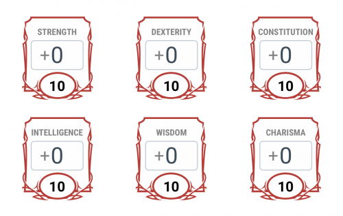

DND 5e characters have 6 Ability Scores:
Strength (STR), Dexterity (DEX), Constitution (CON), Intelligence (INT), Wisdom (WIS) and Charisma (CHA).
When making a spellcaster, follow these steps:
- 1) If you are rolling for ability scores, place your highest score into your Spellcasting ability.
- 2) Place your second highest into Consitution. This will increase your health points, meaning you can take more damage.
- 3) Place your third and highest into Dexterity. This will increase your Armor Class (AC), meaning you will get hit less.
It also helps you aim better with ranged weapons (ie Bows and Slings) or weapons with Finesse (like Daggers and Rapiers)!
- 4) Place your lowest score into Strength. Strength determines how much you can carry and how well you attack with melee weapons,
but you should be relying on spells anyway.
- 5) Place your other scores as you see fit.
This should be a good balance of your capabilities - you will be better with certain actions that others, but don't be afraid to experiment!

Here is what the Ability Scores will typically look like on a character sheet. The (+0) will represent any bonus to the roll you add when using that stat.